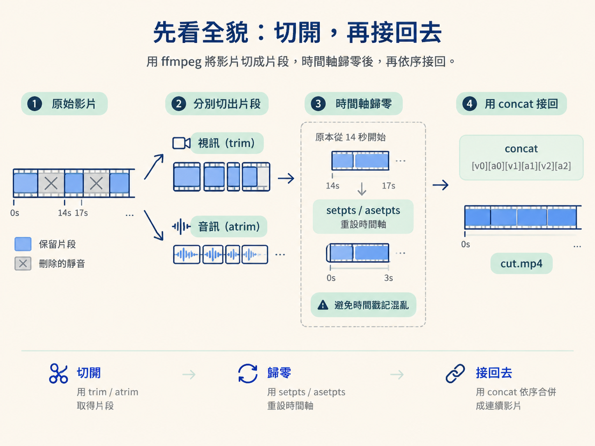
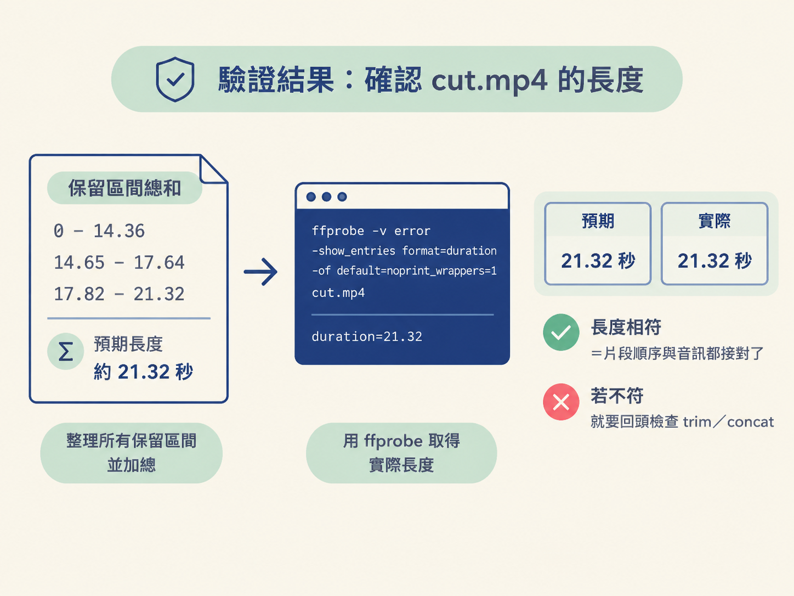

上一課整理好的「保留區間」清單，這一課要把它變成一支真的能播放的 cut.mp4。做完後，你會得到一支剪掉靜音與 NG 重錄的影片，並能用 ffprobe 檢查成品長度是否正確。
動手前需要準備兩樣東西：已經算好的保留區間，以及已安裝好的 ffmpeg。先看一下這一步在整條 pipeline 的哪個位置：上一課負責判斷哪些片段要留下；這一課負責把判斷翻譯成「切開、歸零、接回去」的指令；下一課才會處理關鍵影格與精準 seek 的原理。
ffmpeg 剪片可以想成把一卷膠帶剪成幾段，再按照原本順序重新黏起來。流程只有兩個主要動作：
trim 切出要保留的視訊，用 atrim 切出對應的音訊。concat 按照順序，把每段視訊與音訊重新接成一支影片。ffmpeg 不像剪輯軟體那樣有可以拖曳的時間軸，而是用 filter_complex 描述「哪一段視訊配哪一段音訊，以及最後怎麼串接」。
切出片段後，還有一個容易漏掉的步驟：每段的時間軸都要重新歸零。假設從第 14 秒切到第 17 秒，這段影片原本的時間戳記仍然從 14 秒開始。若直接把多段接在一起，播放器可能會遇到混亂的時間戳記。因此，每段切出來後都要用 setpts 與 asetpts，讓它們從 0 秒重新開始。

上一課已經決定了哪些內容要保留：只刪除不需要的停頓，不重新排列內容；重複句保留最後一版；切點則留一點呼吸。若還沒有保留區間，可以先用 ffmpeg 的 silencedetect 掃描音訊。
下面這行只做偵測，不會產生影片檔。它會把找到的靜音區間印到終端機：
ffmpeg -i input.mkv -af "silencedetect=noise=-30dB:d=0.4" -f null - 2>&1 | grep silence-af "silencedetect=noise=-30dB:d=0.4" 表示：音量低於 -30 分貝，而且持續至少 0.4 秒的區間，就視為靜音。
-f null - 表示不輸出影片，只把處理結果送到終端機。2>&1 | grep silence 則會把 ffmpeg 的訊息導到標準輸出，再只留下包含 silence 的行。
執行後，你會看到每個靜音區間的起點與終點。把靜音區間反過來看，就是要保留的區間。實務上，切點通常會稍微內縮，保留一點自然呼吸。例如靜音從 14.36 秒開始，保留區間可以在 14.46 秒收尾，讓接縫不會像被剪刀硬切開。
每個保留區間都需要兩條濾鏡：視訊用 trim，音訊用 atrim。可以把 a 記成 audio，幫助自己分辨兩者。
[0:v]trim=0:14.36,setpts=PTS-STARTPTS[v0];
[0:a]atrim=0:14.36,asetpts=PTS-STARTPTS[a0]逐段看這兩行：
[0:v] 是第一個輸入檔的視訊軌；[0:a] 是同一個輸入檔的音訊軌。trim=0:14.36 取出 0 到 14.36 秒的視訊；atrim=0:14.36 對音訊做相同的切割。setpts=PTS-STARTPTS 與 asetpts=PTS-STARTPTS 會把片段的時間戳記重設，讓片段從 0 秒開始。[v0] 與 [a0] 是輸出標籤，之後會交給 concat 使用。如果還有第二段，就會再產生 [v1] 與 [a1]；第三段則是 [v2] 與 [a2]。每一段的視訊與音訊都要成對處理。
所有片段切好後，用 concat 把它們接起來。n 是片段數量，v=1:a=1 表示每段都包含一組視訊與一組音訊。
輸入順序很重要。三段內容必須寫成 [v0][a0][v1][a1][v2][a2]，視訊與音訊要一段一段成對出現。若順序顛倒，聲音就可能配到錯的畫面。
下面這支指令示範把三個保留區間接成一支影片，並在最後重新編碼輸出。這是從 silence-cut 範本整理出的完整版本：
ffmpeg -hide_banner -y -i "$IN" -filter_complex "\
[0:v]trim=0:14.36,setpts=PTS-STARTPTS[v0];\
[0:a]atrim=0:14.36,asetpts=PTS-STARTPTS[a0];\
[0:v]trim=14.65:17.64,setpts=PTS-STARTPTS[v1];\
[0:a]atrim=14.65:17.64,asetpts=PTS-STARTPTS[a1];\
[0:v]trim=17.82:21.32,setpts=PTS-STARTPTS[v2];\
[0:a]atrim=17.82:21.32,asetpts=PTS-STARTPTS[a2];\
[v0][a0][v1][a1][v2][a2]concat=n=3:v=1:a=1[v][a]" \
-map "[v]" -map "[a]" \
-c:v libx264 -preset fast -crf 18 -r 24 -g 24 -keyint_min 24 \
-force_key_frames "expr:gte(t,n_forced*1)" \
-c:a aac -b:a 192k -movflags +faststart "$TMP"這支指令可以分成幾個部分理解：
-filter_complex 後面的內容，負責切割每段視訊與音訊，再用 concat 接起來。-map "[v]" -map "[a]" 指定最後輸出的視訊與音訊，使用剛剛 concat 產生的兩個結果。-c:v libx264 與 -c:a aac 分別指定視訊與音訊編碼器。-crf 18 控制畫質；數字越小，通常越接近原始畫質。-g 24 -keyint_min 24 與 -force_key_frames 會影響關鍵影格配置，讓影片能夠逐格精準 seek。這組設定的原理會在下一課說明。只有幾段時，手寫 [v0][a0][v1][a1]… 還可以；區間一多，就很容易漏掉一段，或把視訊與音訊配錯。範本中的 cut-retakes.py 可以把 KEEPS 裡的區間清單，自動轉成 trim、atrim 與 concat：
parts = []
for i, (s, e) in enumerate(KEEPS):
s = max(0, s)
parts.append(f"[0:v]trim={s}:{e},setpts=PTS-STARTPTS[v{i}]")
parts.append(f"[0:a]atrim={s}:{e},asetpts=PTS-STARTPTS[a{i}]")
concat_inputs = "".join(f"[v{i}][a{i}]" for i in range(len(KEEPS)))
concat = f"{concat_inputs}concat=n={len(KEEPS)}:v=1:a=1[v][a]"
filter_complex = ";".join(parts) + ";" + concat
cmd = [
"ffmpeg", "-hide_banner", "-y", "-i", str(IN),
"-filter_complex", filter_complex,
"-map", "[v]", "-map", "[a]",
"-c:v", "libx264", "-preset", "fast", "-crf", "18",
"-r", "30", "-g", "30", "-keyint_min", "30",
"-force_key_frames", "expr:gte(t,n_forced*1)",
"-c:a", "aac", "-b:a", "192k", "-movflags", "+faststart",
str(OUT),
]這段程式會逐一走過 KEEPS，替每個區間建立一組視訊與音訊濾鏡，再把所有輸出標籤串成 concat 的輸入。
請留意畫面更新率與 GOP 相關參數要互相對應。這段範例使用 30fps，因此是 -r 30 -g 30 -keyint_min 30；前面的完整指令使用 24fps，因此是 24。重點是 -g 要等於每秒格數，讓一組畫面剛好涵蓋一秒。
指令跑完後，應該會在原始素材旁邊得到一支 cut.mp4。腳本最後可以用 ffprobe 印出成品長度，再和所有保留區間的總和比對：
ffprobe -v error -show_entries format=duration -of default=noprint_wrappers=1 "$OUT"如果印出的長度和預期相符，就表示各個片段已經按照順序接好，視訊與音訊也一起輸出了。這一課完成的是「剪乾淨」的 cut.mp4；下一課會說明，為什麼還要把影片重新編碼成每秒一個關鍵影格，才能交給 HyperFrames 做精準的字幕與動畫對齊。

用 ffmpeg 剪片可以拆成兩個動作：先用 trim 切視訊、用 atrim 切音訊，再用 concat 依序接回去。setpts 與 asetpts 會把每段片段的時間軸歸零，避免接合後的時間戳記混亂。保留區間可以手寫進 filter_complex，也可以交給 cut-retakes.py 自動產生。執行完成後得到 cut.mp4，再用 ffprobe 核對成品長度是否等於保留區間的總和。